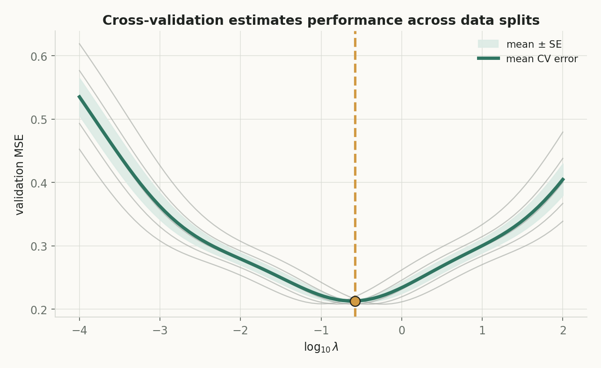
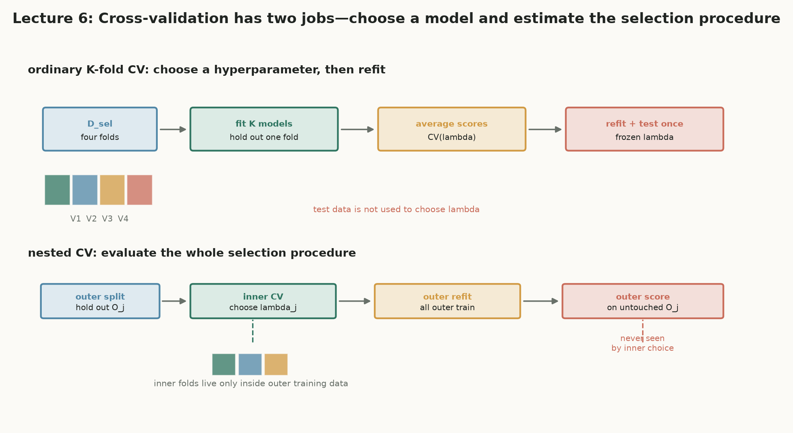
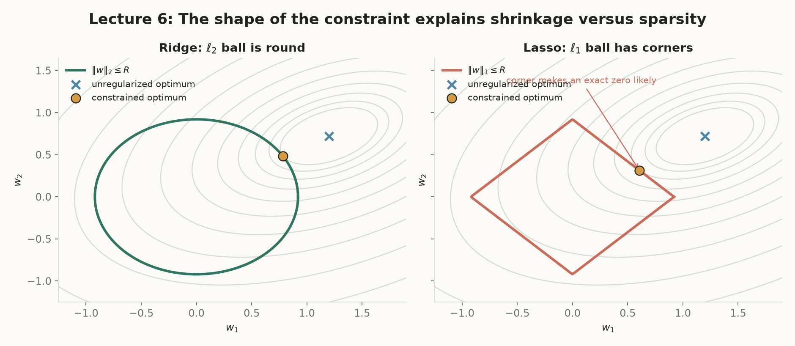
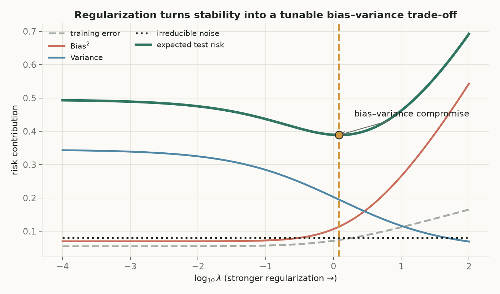
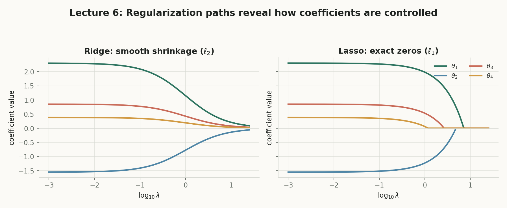

第 6 讲 · 互动附属页
Model Selection & Regularization
第 5 讲区分了训练误差与泛化风险；本讲回答两个随之而来的问题：只有有限数据时怎样选择多项式次数、特征或正则化强度（由 validation / cross-validation 回答）？又怎样限制模型不要为降低训练误差而使用极端参数（由 regularization 回答）？
选方法与调旋钮
训练误差不能用来选模型；用验证集 / K 折 CV 比较候选，用正则化强度 λ 连续调节复杂度。
有限数据是硬约束
10 个点总能被 9 次多项式精确穿过——训练误差为零不代表点与点之间预测稳定。选错复杂度，后面再优化也是白费。
估计 → 选择 → 约束 → 防泄漏
先用验证误差估计每个候选，再用 λ 把复杂度变成旋钮，最后把所有预处理关进每个训练折。
概念地图：点击节点跳到对应小节
实线是核心路径；紫色节点属于拓展。箭头从方块边界出发，在另一方块边界结束，避免穿过节点。
核心1. 模型选择不是参数拟合
比较三个候选：线性模型、五次多项式、大神经网络。训练误差可能满足 $\widehat R_D(\widehat f_3)<\widehat R_D(\widehat f_2)<\widehat R_D(\widehat f_1)$，但这只说明大模型更擅长拟合这份训练集——模型正是通过降低训练误差被训练出来的，这个量对已拟合模型有系统性乐观倾向。
是什么
超参数 $\phi\in\{\text{degree},\lambda,\text{feature set},\text{architecture}\}$ 决定训练方法本身；经验风险 $\widehat R_D$ 是训练集上的平均损失。
白话理解
$w$ 是“答案”，$\phi$ 是“学习方法”；用同一份作业既学习又评奖，肯定偏乐观。
干嘛用
把“拟合参数”与“选择方法”分成两个层次，各自使用不同的数据规则。
怎么算
对每个候选 $\phi$ 训练 $\widehat f_\phi=M_\phi(D_{\mathrm{train}})$；嵌套函数类中增加复杂度不会增大最小训练误差。
为什么重要
$n=10$ 个不同横坐标的点总能被不超过 9 次的多项式精确插值——训练误差为 0，点间预测却可以任意乱跳。注意区分：$\phi$ 是超参数，$\phi_m(x)=[1,x,\ldots,x^m]^\top$ 这种花体用法是特征映射，二者形似而义不同。
真实曲线 $f^*(x)=\sin(1.5x)+0.3x$。「重新采样」真用 Math.random()：$n=10$ 个训练点（$x$ 均匀 + 高斯噪声）与 200 个独立验证点。最小二乘用法方程 + 高斯消元现算（$x$ 先缩放到 $[-1,1]$ 防数值爆炸），$m=0..9$ 的整条误差曲线每次重算。拖到 $m=9$：10 个点被精确穿过，训练 MSE$\to 0$。
读图：上半部——灰虚线是真实曲线，蓝点是训练样本，绿线是次数 $m$ 的拟合；下半部——训练 MSE（蓝）随 $m$ 单调降到 0，验证 MSE（绿）有谷。验证集才是选 $m$ 的依据。
核心2. Hold-out 与 K 折交叉验证
固定候选 $\phi$ 后，$\widehat f_\phi$ 可暂时看成固定函数；若验证集独立于训练集，$\widehat R_{\mathrm{val}}(\phi)=\frac{1}{|D_{\mathrm{val}}|}\sum_{D_{\mathrm{val}}}\ell(y_i,\widehat f_\phi(x_i))$ 能无偏估计它的风险。但 $\min_\phi\widehat R_{\mathrm{val}}(\phi)$ 会偏向随机波动中碰巧较低的候选——这就是 validation overfitting；验证集一旦参与选择，就不再是中立的最终评估集。
是什么
验证集 是不参与拟合、只用于比较 $\phi$ 的数据；交叉验证 把 $D_{\mathrm{sel}}$ 切成 $K$ 折，轮流留一折验证。
白话理解
与其留一张大考卷，不如把题库切成 $K$ 份，轮流当考卷——每份数据都既当过学生又当过考官。
干嘛用
在有限数据上为每个候选 $\phi$ 得到更稳的泛化估计；选定 $\widehat\phi$ 后在全部 $D_{\mathrm{sel}}$ 上重训，再用 $D_{\mathrm{test}}$ 评估整个流程。
怎么算
等折：$\operatorname{CV}_K(\phi)=\frac1K\sum_{k=1}^K\widehat R_k(\phi)$；折大小不等时用样本加权 $\frac{1}{|D_{\mathrm{sel}}|}\sum_k|V_k|\widehat R_k(\phi)$。
为什么重要
折训练集大量重叠 ⇒ 折误差不独立，不能当作 $K$ 个独立实验算普通标准误；$K=5$ 或 $10$ 是常见的计算量/稳定性折中。注意 $K$ 是折数、$k$ 是折下标，与聚类的组件数 $K$ 复用同一字母但含义不同。
每一折都把 $V_k$ 当未见数据，预处理与模型都必须在 $D_{-k}=\{z_i\in D_{\mathrm{sel}}:z_i\notin V_k\}$ 内重新拟合：
$$\widehat R_k(\phi)=\frac{1}{|V_k|}\sum_{(x_i,y_i)\in V_k}\ell\bigl(y_i,\widehat f_\phi^{(-k)}(x_i)\bigr),\qquad \operatorname{CV}_K(\phi)=\frac1K\sum_{k=1}^K\widehat R_k(\phi).$$
等折大小时两种平均完全一致；不等时只有样本加权式让每个样本贡献相同权重。CV 曲线用于比较 $\phi$——不是说某一折模型就是最终模型。
讲义计算题 1：$K=3$ 折，$|V|=(2,3,5)$，$\lambda=0.1$ 的折 MSE 为 $(4,2,3)$，$\lambda=1$ 为 $(3,3,2)$。「随机扰动」真用 Math.random() 给 6 个折误差各加 $\pm0.8$ 均匀扰动；两种平均都现算，比较谁胜出。

拓展3. Nested CV：评估选择流程本身
普通 CV 的最小值已经参与了选择，直接当成最终性能会偏乐观。Nested cross-validation 用外层折评估整个“内层选择 + 重训”算法：外层留出的数据从未参与内层选择。
是什么
两层 CV：内层在每个外层训练折 $D_{-j}^{\mathrm{out}}$ 内选 $\widehat\phi_j$，外层在 $O_j$ 上评估。
白话理解
普通 CV 是“用同一份考卷选课代表再报分”；nested CV 是“每次换一批人重新选课代表，再用他们没见过的题考”。
干嘛用
数据很少、要比较完整建模管线、候选很多（validation overfitting 风险高）时，给出选择流程的尽量无偏评估。
怎么算
$E_j^{\mathrm{out}}=\frac{1}{|O_j|}\sum_{O_j}\ell\bigl(y_i,M_{\widehat\phi_j}(D_{-j}^{\mathrm{out}})(x_i)\bigr)$，$\operatorname{NCV}=\frac{1}{K_{\mathrm{out}}}\sum_jE_j^{\mathrm{out}}$。
为什么重要
nested CV 评估的是“选择流程”，不会自动给出唯一超参数——部署前仍可在全部非测试数据上再做一次普通 CV 选 $\widehat\phi$ 并重训。

核心4. Ridge：目标、推导与谱收缩
多项式次数大时，高次项能拟合训练噪声、系数也会非常大。正则化 的思路是：在尽量贴合 $y$ 的同时，抑制系数在数据弱约束方向上变得过大。为避开常数因子，统一用 $J_\lambda(w)=\frac12\|y-Xw\|_2^2+\frac\lambda2\|w\|_2^2$（$\lambda\ge0$）。
是什么
Ridge 用 $\ell_2$ 惩罚；收缩因子 $\mu_j/(\mu_j+\lambda)$ 描述每个特征值方向被压多少；条件数 $\kappa_\lambda=\frac{\mu_{\max}+\lambda}{\mu_{\min}+\lambda}$ 衡量数值病态。
白话理解
给每个方向的系数装上“弹簧”：数据证据强（$\mu_j$ 大）的方向几乎不动，证据弱的方向被狠狠拉回零。
干嘛用
即使 $X^\top X$ 奇异也能得到唯一稳定解；同时缓和弱方向上的方差。
怎么算
闭式解 $\widehat w_\lambda=(X^\top X+\lambda I)^{-1}X^\top y$；沿 $X^\top X$ 的特征方向逐方向收缩。
为什么重要
正定性证明解释了 Ridge 为何总有唯一解；谱解释把“稳定化”量化成逐方向因子。注意 $\lambda$ 是正则强度、$\mu_j=s_j^2$ 是 $X^\top X$ 的特征值，二者同框时别混淆。
逐步推导（每步注明用了什么）。 第一步，求梯度——链式法则，系数 $1/2$ 正好抵消平方求导的 $2$：$\nabla J_\lambda(w)=X^\top(Xw-y)+\lambda w$。第二步，凸二次目标的驻点——令梯度为零：$X^\top Xw-X^\top y+\lambda w=0$。第三步，整理得正规方程：
$$(X^\top X+\lambda I)w=X^\top y.$$
第四步，证明可逆——对任意非零 $v$：$v^\top(X^\top X+\lambda I)v=\|Xv\|_2^2+\lambda\|v\|_2^2>0$（拆开括号，两项分别是范数平方），所以 $\lambda>0$ 时矩阵正定、解唯一：
$$\widehat w_\lambda=(X^\top X+\lambda I)^{-1}X^\top y.$$
第五步，SVD 分解——紧致 SVD $X=U\operatorname{diag}(s_j)V^\top$ 给出 $X^\top X=V\operatorname{diag}(s_j^2)V^\top$，且 $X^\top y\in\operatorname{span}(V)$（正交补项乘上去等于零），代入后矩阵乘法在每个奇异方向上退化为标量：
$$\widehat w_\lambda=\sum_{j=1}^r\frac{s_j}{s_j^2+\lambda}(u_j^\top y)v_j,\qquad \widehat w_{\mathrm{OLS},j}=\frac{u_j^\top y}{s_j}\ \Rightarrow\ \text{收缩因子}=\frac{s_j^2}{s_j^2+\lambda}=\frac{\mu_j}{\mu_j+\lambda}.$$
$\mu_j$ 小 ⇒ 数据对该方向约束弱 ⇒ 因子接近零；$\mu_j$ 大 ⇒ 收缩轻微。预测向量同理：$X\widehat w_\lambda=\sum_j\frac{s_j^2}{s_j^2+\lambda}(u_j^\top y)u_j$。
讲义计算题 2：$X^\top X=\operatorname{diag}(4,1)$、$X^\top y=(8,2)$。拖动 $\lambda$，右侧逐步现算 Ridge 解、两方向收缩因子与条件数；左图画两条收缩因子曲线 $\mu/(\mu+\lambda)$。默认 $\lambda=1$ 复现 $\widehat w=(1.6,1)$、收缩 $4/5$ 与 $1/2$、$\kappa:4\to2.5$。提示：自测题 4 的 $\mu=0.2,\lambda=0.8$ 给出 $0.2/1.0=0.2$——弱方向被强烈收缩。
核心5. Lasso 与 soft-thresholding
Lasso 把惩罚换成 $\ell_1$：$\widehat w_\lambda\in\arg\min_w\{\frac12\|y-Xw\|_2^2+\lambda\|w\|_1\}$，$\|w\|_1=\sum_j|w_j|$。绝对值在零点不可微，但目标仍凸，可用次梯度求解；关键是它能把部分坐标压到严格等于零。
是什么
soft-thresholding $S_\lambda(z)=\operatorname{sign}(z)\max\{|z|-\lambda,0\}$ 是一维 Lasso 的精确解；次梯度 $\partial|w||_{w=0}=[-1,1]$ 处理零点不可微；稀疏性 指部分系数严格为零。
白话理解
平方损失把 $w$ 拉向 $z=x^\top y$，$\lambda|w|$ 把它拉回零；拉力不超过 $\lambda$ 时，零赢。
干嘛用
同时收缩并筛除特征，得到较少非零系数的模型。
怎么算
标准化特征（$x^\top x=1$）下三种情况：$z>\lambda\Rightarrow w=z-\lambda$；$z<-\lambda\Rightarrow w=z+\lambda$；$|z|\le\lambda\Rightarrow w=0$（次梯度条件 $0\in-z+\lambda[-1,1]$）。
为什么重要
零点不是“近似舍入”，而是次梯度最优性条件的结果；正交设计 $X^\top X=I$ 下逐坐标 $\widehat w_j=S_\lambda(z_j)$，而 Ridge 对照为 $z_j/(1+\lambda)$——连续收缩、无零区间。
推导第一步，展开平方（$x^\top x=1$，$z=x^\top y$）：
$$\frac12\|y-xw\|_2^2=\frac12y^\top y-wz+\frac12w^2\ \Rightarrow\ j(w)=\frac12(w-z)^2+\lambda|w|+\text{const}.$$
第二步分三种情况：$w>0$ 时 $|w|=w$，一阶条件 $(w-z)+\lambda=0$ 得 $w=z-\lambda$（需 $z>\lambda$）；$w<0$ 时得 $w=z+\lambda$（需 $z<-\lambda$）；$w=0$ 时用次梯度，最优当且仅当 $0\in-z+\lambda[-1,1]\iff|z|\le\lambda$。合并：
$$\widehat w=S_\lambda(z)=\operatorname{sign}(z)\max\{|z|-\lambda,0\}.$$
若 $x^\top x=a>0$ 而非 $1$，同样推导得 $\widehat w=\frac1aS_\lambda(x^\top y)$。
讲义计算题 3。左图：$j(w)=\frac12(w-z)^2+\lambda|w|$ 的曲线与最小点；右图：$S_\lambda(z)$ 软阈值曲线（绿）与 Ridge 的 $z/(1+\lambda)$ 直线（灰虚线）对照。默认 $z=3,\lambda=1$ 复现 $S_1(3)=2$；试 $z=0.8$ 得 $0$、$z=-2.5$ 得 $-1.5$。讲义对照组：$z=(3,0.8,-0.2)\Rightarrow$ Lasso $(2,0,0)$、Ridge $(1.5,0.4,-0.1)$。
拓展6. 稀疏性的几何与方法选择
惩罚形式对应一个约束形式：Ridge 是 $\min_w\frac12\|y-Xw\|_2^2\ \text{s.t.}\ \|w\|_2\le R$，Lasso 是 $\|w\|_1\le R$。二维中 $\ell_2$ 球 $w_1^2+w_2^2\le R^2$ 是圆，$\ell_1$ 球 $|w_1|+|w_2|\le R$ 是菱形。
是什么
约束最优点是损失等高线第一次接触可行域的位置；Elastic Net 混合两者：$\frac12\|y-Xw\|_2^2+\lambda_1\|w\|_1+\frac{\lambda_2}{2}\|w\|_2^2$。
白话理解
菱形尖角正好戳在坐标轴上——等高线更容易先碰到尖角，于是某个 $w_j=0$。
干嘛用
几何图像与 soft-thresholding 的解析结果相互印证：尖角 ↔ 零点处的次梯度区间。
怎么算
圆形约束平滑缩小所有坐标；带尖角的菱形约束让接触点带上精确零。
为什么重要
提醒：最早归零 ≠ 最不重要——特征相关时 Lasso 可能在一组可替代变量中随机保留一个；Ridge 更倾向共同缩小。
连续缩小，很少精确置零
适合：许多特征都有小作用、特征高度相关、重视预测稳定性。
缩小并筛除部分系数
适合：相信真实信号稀疏、希望得到较少非零特征。
$\ell_1$ 与 $\ell_2$ 同时使用
适合：既要稀疏性，又希望相关特征组更稳定。
这些只是建模先验
不是硬规则；最终仍应在无泄漏的 validation/CV 流程中比较。

核心7. 标准化、截距与泄漏
两个特征表达同一物理量、一个用米一个用毫米时，毫米特征的系数会小约 1000 倍——直接惩罚 $|w_j|$ 或 $w_j^2$，单位选择就改变了惩罚强度。所以标准化是正则化的一部分，而不是可选的装饰。
是什么
标准化：$x'_{ij}=\frac{x_{ij}-\mu_j}{s_j}$，$\mu_j,s_j$ 只用训练集统计量；数据泄漏：验证/测试信息通过预处理渗入训练。
白话理解
先拿全体数据算均值再切折，相当于考官提前看过考卷的统计特征。
干嘛用
让不同单位的特征承受相同的有效惩罚；保持验证误差的“未见数据”含义。
怎么算
$\mu_j=\frac1{n_{\mathrm{train}}}\sum_{\mathrm{train}}x_{ij}$，$s_j=\sqrt{\frac1{n_{\mathrm{train}}}\sum_{\mathrm{train}}(x_{ij}-\mu_j)^2}$；验证集套用同一组 $\mu_j,s_j$，不重新拟合。
为什么重要
截距不惩罚：$P=\operatorname{diag}(0,1,\ldots,1)$，惩罚 $b$ 会让预测整体水平无意义地被拉向零；缺失值填补、PCA、特征选择等也都必须在每个训练折内单独拟合。
合并 $\theta=(b,w^\top)^\top$ 后 Ridge 目标可写为 $\frac12\|y-\widetilde X\theta\|_2^2+\frac\lambda2\theta^\top P\theta$，第一个零明确表示截距不惩罚；中心化后可先估 $w$ 再恢复 $\widehat b=\overline y-\overline x^{\top}\widehat w$。
讲义计算题 4：$x_{\mathrm{train}}=(1,2,3)$，总体式分母 $n$。默认 $x_{\mathrm{val}}=10$ 复现 $\mu=2$、$s=\sqrt{2/3}$、$x'_{\mathrm{val}}=8\sqrt{3/2}\approx9.798$。右图并排对照“正确（只用训练统计量）”与“泄漏（把 $x_{\mathrm{val}}$ 拉进 $\mu,s$ 重算）”。
拓展8. λ 如何改变 bias 与 variance
偏差-方差权衡：$\lambda=0$ 退化为 OLS（偏差小、弱方向方差大）；$\lambda\to\infty$ 时斜率 $w\to0$（截距不惩罚则模型趋于常数预测：方差小、偏差大）；中间某个 $\lambda$ 使 $\mathrm{Bias}^2+\mathrm{Variance}$ 最小——总风险最低点不是训练误差最低点。
是什么
bias 是系统性偏离，variance 是随训练集抽样的波动；测试风险 $\approx$ bias²+variance+噪声。
白话理解
$\lambda$ 调节的不是“要不要拟合训练集”，而是允许模型在新数据上承担多少不稳定性。
干嘛用
解释为什么收缩因子优先抑制小特征值方向——那些方向正是估计最不稳定的方向。
怎么算
Ridge 还可缓和插值阈值附近的高方差峰值；系数路径上 Ridge 连续收向零、Lasso 逐条贴住横轴。
为什么重要
这只是机制解释，不能替代验证：实际 $\lambda$ 仍应由无泄漏的 validation/CV 选择，冻结后再用独立 test 评估。


核心收束：training 拟合参数，validation 选方法，test 评流程
K 折 CV（等折）
$$\operatorname{CV}_K(\phi)=\frac1K\sum_{k=1}^K\widehat R_k(\phi)$$
样本加权 CV
$$\operatorname{CV}^{w}_K(\phi)=\frac{1}{|D_{\mathrm{sel}}|}\sum_k|V_k|\widehat R_k(\phi)$$
Ridge 闭式解
$$\widehat w_\lambda=(X^\top X+\lambda I)^{-1}X^\top y$$
谱收缩因子
$$\frac{\mu_j}{\mu_j+\lambda},\quad \mu_j=s_j^2$$
Soft-thresholding
$$S_\lambda(z)=\operatorname{sign}(z)\max\{|z|-\lambda,0\}$$
标准化（训练统计量）
$$x'_{ij}=\frac{x_{ij}-\mu_j}{s_j},\quad P=\operatorname{diag}(0,1,\ldots,1)$$